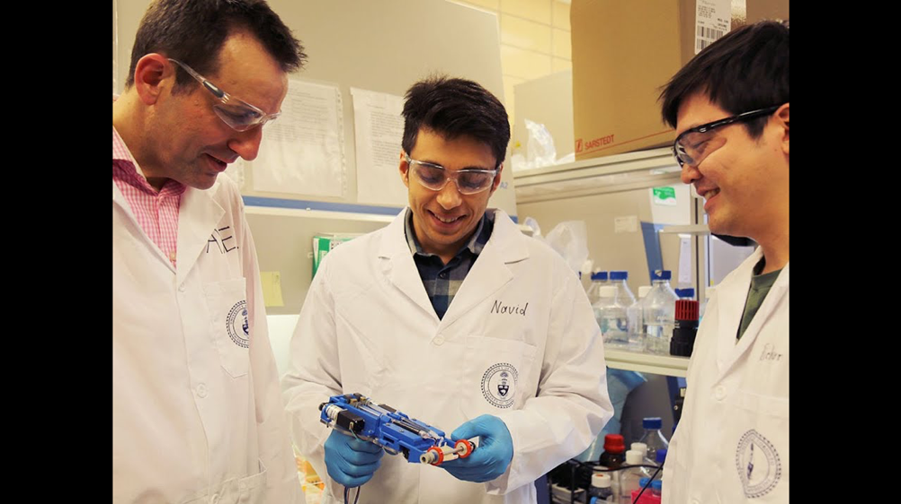

Researchers at the University of Toronto have developed a portable skin “printer.” This simple and innovative device can graft human skin using bio-inks. This “printer” can print 3D layers of skin and can treat even the most severe flesh wounds in as few as two minutes.
This easy to use hand-held device would be of great help to those suffering from burns and deep flesh wounds. Current treatment of these injuries are generally treated by skin grafts, which have many drawbacks, such as tissue shortages and rejections.
Image by News 24h/7 on Youtube
Axel Guenther, associate professor of mechanical engineering at the University of Toronto, said, “Most current 3D bio-printers are bulky, work at low speeds, are expensive and are incompatible with clinical application.”
This portable “printer” weighs less than 2 lbs which makes it easily hand-held. It can be used to cover large wounds since it is not reliant upon limited patches of skin as in the case of skin grafts. It uses bio-ink that contains skin cells, collagen, and fibrin wherein collagen is a protein that allows cells to grow and thrive and fibrin is a protein that aids in blood clotting to help heal wounds.
Researchers have tested the device on mice and pigs. They found that it can repair deep tissue wounds safely and effectively in animals. Additional research is planned for the skin printing device, with the eventual goal of testing on humans.
Find more info here.
This development looks like a paradigm changer to me after additional research, development, and regulatory approvals. This device could revolutionize burn treatment.
What do you think?